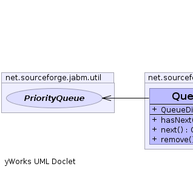
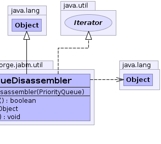

net.sourceforge.jabm.util.QueueDisassembler
net.sourceforge.jabm.util.QueueDisassembler
|
|||||||||
| PREV CLASS NEXT CLASS | FRAMES NO FRAMES | ||||||||
| SUMMARY: NESTED | FIELD | CONSTR | METHOD | DETAIL: FIELD | CONSTR | METHOD | ||||||||
java.lang.Object
public class QueueDisassembler
An iterator that destructively iterates over a PriorityQueue, that is each item that is returned is removed from the top of the heap.
|  |  |
| Constructor Summary | |
|---|---|
QueueDisassembler(PriorityQueue queue)
|
|
| Method Summary | |
|---|---|
boolean |
hasNext()
|
java.lang.Object |
next()
|
void |
remove()
|
| Methods inherited from class java.lang.Object |
|---|
clone, equals, finalize, getClass, hashCode, notify, notifyAll, toString, wait, wait, wait |
| Constructor Detail |
|---|
public QueueDisassembler(PriorityQueue queue)
| Method Detail |
|---|
public boolean hasNext()
hasNext in interface java.util.Iteratorpublic java.lang.Object next()
next in interface java.util.Iteratorpublic void remove()
remove in interface java.util.Iterator
|
|||||||||
| PREV CLASS NEXT CLASS | FRAMES NO FRAMES | ||||||||
| SUMMARY: NESTED | FIELD | CONSTR | METHOD | DETAIL: FIELD | CONSTR | METHOD | ||||||||